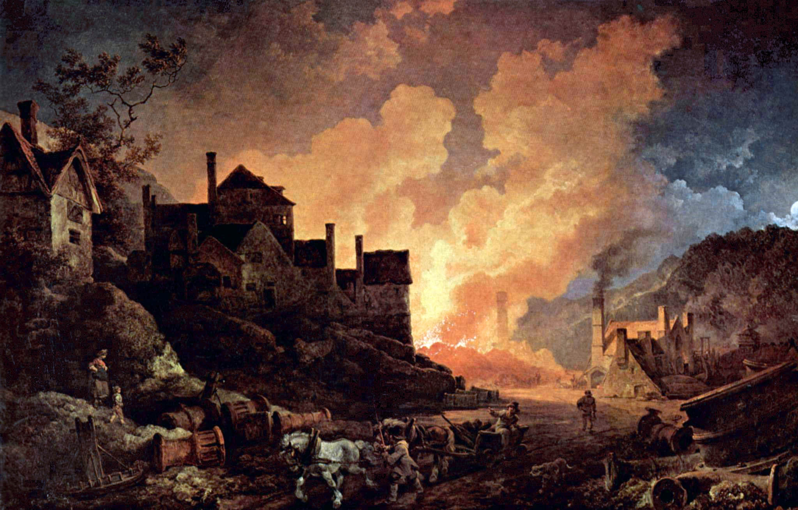
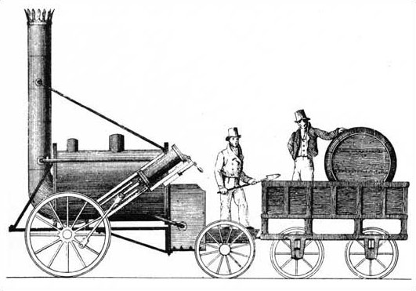
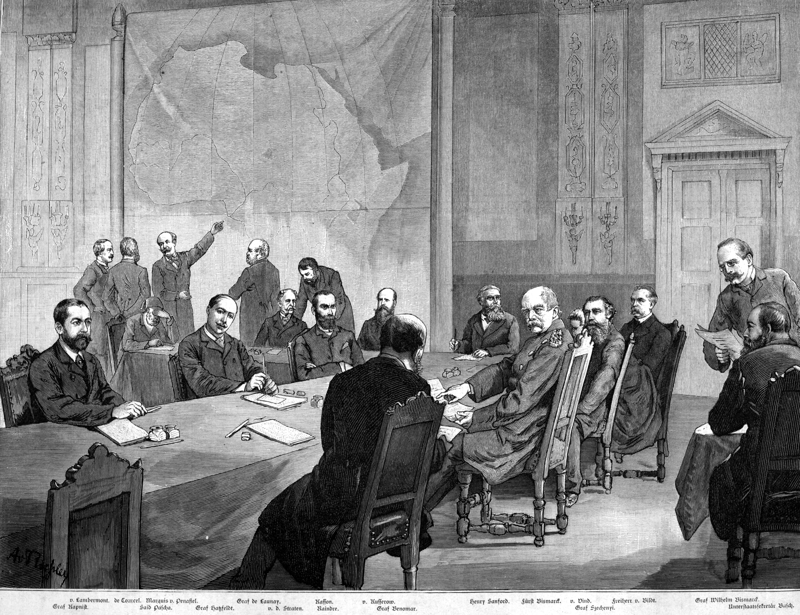

1. Η Βιομηχανική Επανάσταση: Η Δεύτερη Μεγάλη Τομή της Ανθρωπότητας
Στο 19ο μάθημα της σειράς, η Μαρία Ευθυμίου αναλύει το φαινόμενο που άλλαξε τη μοίρα του είδους Homo sapiens περισσότερο από οτιδήποτε άλλο μετά την ανακάλυψη της γεωργίας πριν από 10.000 χρόνια: τη Βιομηχανική Επανάσταση.
Επί δέκα χιλιετίες, η ανθρώπινη παραγωγή και διαβίωση ήταν εγκλωβισμένη σε ένα αυστηρό βιολογικό και ενεργειακό καθεστώς. Η ενέργεια που κινούσε τον κόσμο προερχόταν αποκλειστικά από τρεις πηγές: τη μυϊκή δύναμη των ανθρώπων και των υποζυγίων (βόδια, άλογα, μουλάρια), τη δύναμη του ανέμου για τα πανιά και τους ανεμόμυλους, και τη ροή του τρεχούμενου νερού για τους νερόμυλους. Ένας Γάλλος χωρικός του 1750 ζούσε, καλλιεργούσε, φωτιζόταν και μετακινούταν με τρόπο που ελάχιστα διέφερε από εκείνον ενός Αιγύπτιου γεωργού την εποχή του Ραμσή ή ενός Ρωμαίου αγρότη της εποχής του Αυγούστου: με το βόδι, το ξύλινο αλέτρι, το κερί από ζωικό λίπος και τον ρυθμό της ανατολής και της δύσης του ήλιου. Όλες αυτές οι ενεργειακές πηγές είχαν ανυπέρβλητα φυσικά όρια —τα ζώα εξαντλούνται, οι άνθρωποι πεινούν και αρρωσταίνουν, ο άνεμος πέφτει σε άπνοια και τα ποτάμια παγώνουν τον χειμώνα ή στερεύουν το καλοκαίρι.
Το Ξεκλείδωμα των Ορυκτών Καυσίμων:
Στα τέλη του 18ου αιώνα στη Μεγάλη Βρετανία, συνέβη το κοσμοϊστορικό άλμα: ο άνθρωπος κατάφερε να ξεκλειδώσει την ηλιακή ενέργεια εκατομμυρίων ετών που βρισκόταν παγιδευμένη και απολιθωμένη στα έγκατα της γης με τη μορφή του λιθάνθρακα (ορυκτού κάρβουνου).
- Η Ατμομηχανή του Τζέιμς Βατ (James Watt, 1769–1776): Με την προσθήκη του ξεχωριστού συμπυκνωτή, ο Βατ μετέτρεψε την ατελή αντλία του Νιούκομεν σε μια πανίσχυρη μηχανή ικανή να μετατρέψει τη θερμική ενέργεια της καύσης του άνθρακα σε συνεχή, περιστροφική μηχανική κίνηση.
- Για πρώτη φορά στην ιστορία, ο παραγωγός απέκτησε έναν «εργάτη» που δεν κοιμάται, δεν κουράζεται, δεν απεργεί, δεν χρειάζεται τροφή πέρα από κάρβουνο και νερό, και μπορεί να λειτουργεί ακούραστα 24 ώρες το εικοσιτετράωρο, χειμώνα-καλοκαίρι, οπουδήποτε κι αν στηθεί.
Γιατί στη Μεγάλη Βρετανία;
Η καθηγήτρια εξηγεί ότι η Βρετανία δεν έγινε η κοιτίδα της εκβιομηχάνισης από κάποια τυχαία σύμπτωση, αλλά χάρη σε μια σπάνια και μοναδική ιστορική και γεωλογική συγκυρία:
- Γεωλογική & Γεωγραφική Τύχη: Η Μεγάλη Βρετανία διέθετε τεράστια, παχιά κοιτάσματα υψηλής ποιότητας λιθάνθρακα και σιδηρομεταλλεύματος, τα οποία βρίσκονταν σε ελάχιστο βάθος από την επιφάνεια και —το σημαντικότερο— δίπλα ακριβώς σε πλωτά ποτάμια και φυσικά λιμάνια. Σε μια εποχή που η χερσαία μεταφορά βαρέων φορτίων ήταν πανάκριβη, το κάρβουνο της Αγγλίας μπορούσε να μεταφερθεί με ελάχιστο κόστος διά θαλάσσης.
- Θεσμικό & Πολιτικό Πλαίσιο: Μετά την Ένδοξη Επανάσταση του 1688, η Βρετανία είχε εγκαθιδρύσει σταθερό κοινοβουλευτισμό, απαλλαγμένο από την αυθαιρεσία της απόλυτης μοναρχίας. Ο νόμος περί ευρεσιτεχνιών (Statute of Monopolies) παρείχε ασφάλεια στους εφευρέτες, εξασφαλίζοντας ότι όποιος επινοούσε μια αποδοτικότερη μηχανή θα αποκόμιζε τεράστια οικονομικά κέρδη.
- Συσσώρευση Εμπορικού Κεφαλαίου: Η κυριαρχία του βρετανικού ναυτικού στο παγκόσμιο εμπόριο, τα κέρδη από το τριγωνικό υπερατλαντικό εμπόριο, τις φυτείες ζάχαρης της Καραϊβικής και τη φορολογική αφαίμαξη της Βεγγάλης από την Εταιρεία Ανατολικών Ινδιών δημιούργησαν τεράστια διαθέσιμα κεφάλαια που αναζητούσαν παραγωγικές επενδύσεις.
Η Μετατόπιση του Παγκόσμιου Οικονομικού Κέντρου Βάρους:
Η Μαρία Ευθυμίου υπογραμμίζει ένα συγκλονιστικό στατιστικό δεδομένο που συχνά διαφεύγει από τη δυτικοκεντρική ματιά:
Το 1775, την ώρα που ο Τζέιμς Βατ τελειοποιούσε την ατμομηχανή του, η Ασία (η Κίνα των Τσινγκ και η Ινδία των Μουγκάλ) παρήγαγε ακόμη το 80% του συνολικού βιομηχανικού πλούτου του πλανήτη! Για χιλιάδες χρόνια, η Ευρώπη ήταν ένας φτωχός, περιφερειακός πελάτης που αγόραζε μετάξι, μπαχαρικά, πορσελάνη και βαμβακερά υφάσματα από την Ανατολή πληρώνοντας σε ασήμι. Μέσα σε λιγότερο από δύο αιώνες, μέχρι το 1950, η Δύση (Δυτική Ευρώπη και ΗΠΑ) είχε ανατρέψει σαρωτικά τους συσχετισμούς: παρήγαγε μόνη της πάνω από το 55% με 60% της παγκόσμιας παραγωγής, περιθωριοποιώντας την Ασία και μετατρέποντας τον υπόλοιπο πλανήτη σε προμηθευτή πρώτων υλών.

2. Σίδηρος, Ατμός & Σιδηρόδρομοι
Η έκρηξη της βιομηχανικής παραγωγής δεν ξεκίνησε από τα βαρέα μέταλλα, αλλά από τον πιο καθημερινό και ευέλικτο τομέα: την κλωστοϋφαντουργία.
Μέχρι τότε, τα ρούχα της ανθρωπότητας φτιάχνονταν από μαλλί ή λινάρι με αργή, χειρωνακτική εργασία στο σπίτι (putting-out system). Το βαμβάκι όμως αποδείχθηκε το ιδανικό υλικό της νέας εποχής: ελαφρύ, ανθεκτικό, εύκολο στο πλύσιμο και ευχάριστο σε όλα τα κλίματα. Μια σειρά από επαναστατικές εφευρέσεις —η ιπτάμενη σαΐτα του Τζον Κέι (1733), η μηχανή κλώσης Spinning Jenny του Τζέιμς Χάργκριβς (1764), το υδατοκίνητο πλαίσιο του Ρίτσαρντ Άρκραϊτ και ο μηχανικός αργαλειός του Έντμουντ Κάρτραϊτ (1785)— πολλαπλασίασαν την απόδοση της παραγωγής επί εκατό.
Η Καταστροφή των Ινδικών Αργαλειών:
Η Βρετανία δεν παρήγαγε ούτε ένα γραμμάριο βαμβακιού στο έδαφός της. Εισήγαγε την ακατέργαστη πρώτη ύλη από τις φυτείες σκλάβων του Αμερικανικού Νότου και από την Ινδία, την επεξεργαζόταν στα ατμοκίνητα εργοστάσια του Λάνκασιρ και του Μάντσεστερ, και στη συνέχεια κατέκλυζε τις διεθνείς αγορές με φθηνά υφάσματα.
Το αποτέλεσμα ήταν ολέθριο για την παραδοσιακή Ανατολή: η Ινδία, που για χιλιετίες ύφαινε τα διασημότερα μουσελίνια και τσίτια στον κόσμο, είδε τους εκατομμύρια χειροτέχνες της να χρεοκοπούν και να λιμοκτονούν. Με τους αποικιακούς δασμούς που επέβαλαν οι Βρετανοί, η Ινδία μετατράπηκε από κορυφαίος εξαγωγέας έτοιμων υφασμάτων σε απλό εξαγωγέα ακατέργαστου βαμβακιού και καταναλωτή βρετανικών βιομηχανικών προϊόντων.

Ο Σιδηρόδρομος & η Σύνθλιψη της Απόστασης:
Το επόμενο μεγάλο βήμα ήταν η εφαρμογή της ατμομηχανής στις μεταφορές. Το 1829, ο αυτοδίδακτος μηχανικός Τζορτζ Στέφενσον (George Stephenson) παρουσίασε τη θρυλική ατμομηχανή Rocket στους αγώνες του Ρέινχιλ, εγκαινιάζοντας τη γραμμή Λίβερπουλ–Μάντσεστερ με την πρωτοφανή ταχύτητα των 47 χιλιομέτρων την ώρα!
Μέσα σε λίγες δεκαετίες, η σιδηροδρομική μανία κάλυψε την Ευρώπη και τη Βόρεια Αμερική με ένα πυκνό σιδερένιο δίκτυο. Ταξίδια που απαιτούσαν εβδομάδες επίπονης διαδρομής με ταχυδρομικές άμαξες μέσα σε λασπόδρομους, καλύπτονταν πλέον με ασφάλεια σε λίγες ώρες.
Ο σιδηρόδρομος επέβαλε ακόμη και την ενοποίηση του ίδιου του ανθρώπινου χρόνου: μέχρι τότε κάθε πόλη ρύθμιζε τα ρολόγια της με βάση το τοπικό ηλιακό μεσημέρι, αλλά τα δρομολόγια των τρένων απαιτούσαν ακρίβεια δευτερολέπτου, γεννώντας την τυποποιημένη ώρα των σιδηροδρόμων και τις ζώνες ώρας (Greenwich Mean Time).
Ο Σιδηρόδρομος ως Πολιτικός Ενοποιητής: Όπως επισημαίνει η Μαρία Ευθυμίου, οι ράγες δεν μετέφεραν μόνο κάρβουνο και εμπορεύματα, αλλά ένωσαν ολόκληρες ηπείρους: στις ΗΠΑ συνέδεσαν τον Ατλαντικό με τον Ειρηνικό Ωκεανό (1869 στο Promontory Summit της Γιούτα), ενώ στην Ινδία οι Βρετανοί έχτισαν ένα κολοσσιαίο δίκτυο 40.000 χιλιομέτρων μέσα από ζούγκλες, βουνά και ελώδεις εκτάσεις —ράγες πάνω στις οποίες κυλούν κατά εκατομμύρια οι Ινδοί μέχρι σήμερα!
Υπερατλαντικό Τηλεγραφικό Καλώδιο (1866): Παράλληλα, τα σιδερένια ατμόπλοια εκμηδένισαν τους ωκεανούς. Με την πόντιση του πρώτου επιτυχημένου υπερατλαντικού τηλεγραφικού καλωδίου από το γιγαντιαίο πλοίο Great Eastern το 1866, ένα μήνυμα από το Λονδίνο στη Νέα Υόρκη δεν χρειαζόταν πλέον τρεις εβδομάδες ταξιδιού με ιστιοφόρο, αλλά έφτανε σε ελάχιστα δευτερόλεπτα, ενοποιώντας τα διεθνή χρηματιστήρια σε πραγματικό χρόνο.
3. Το Κοινωνικό Δράμα & η Παιδική Εργασία
Αυτή η εκρηκτική τεχνολογική πρόοδος συνοδεύτηκε από ανείπωτο ανθρώπινο πόνο και κοινωνική αποδιάρθρωση. Με τους νόμους περί περιφράξεων (Enclosure Acts), εκατομμύρια αγρότες εκδιώχθηκαν από τα κοινοτικά λιβάδια της υπαίθρου και συνέρρευσαν μαζικά στις αναδυόμενες βιομηχανικές πόλεις (Μάντσεστερ, Μπέρμιγχαμ, Λιντς, Σέφιλντ).
Οι Συνθήκες στις «Σατανικές Φάμπρικες»:
Μέσα σε ελάχιστα χρόνια, τα άλλοτε ήσυχα χωριά μετατράπηκαν σε σκοτεινές μεγαλουπόλεις καλυμμένες από ένα μόνιμο πέπλο μαύρης αιθάλης:
- Εξοντωτικά ωράρια: 14 έως 16 ώρες εξαντλητικής δουλειάς την ημέρα, έξι ημέρες την εβδομάδα, μέσα σε ασφυκτικές αίθουσες χωρίς εξαερισμό, γεμάτες δηλητηριώδη σκόνη άνθρακα και μικροσκοπικές ίνες βαμβακιού που κατέστρεφαν τους πνεύμονες των εργατών.
- Μηδενική ασφάλεια: Οι μηχανές δεν διέθεταν προστατευτικά κιγκλιδώματα. Οποιοσδήποτε εργάτης έχανε την προσοχή του από την κούραση και πιανόταν στα γρανάζια, ακρωτηριαζόταν ή σκοτωνόταν επί τόπου, απολυόμενος αμέσως χωρίς καμία αποζημίωση ή ιατρική περίθαλψη.
- Άθλια υγιεινή & καταρράκωση του προσδόκιμου ζωής: Ολόκληρες εργατικές οικογένειες στριμώχνονταν σε υγρά, ανήλιαγα υπόγεια χωρίς αποχέτευση ή τρεχούμενο νερό. Οι επιδημίες χολέρας και τύφου θέριζαν τους κατοίκους. Στις φτωχογειτονιές του Μάντσεστερ («Cottonopolis»), το μέσο προσδόκιμο ζωής των εργατών έπεσε στο εφιαλτικό νούμερο των 17 έως 19 ετών!
Η Φρίκη της Παιδικής Εργασίας & η Έκθεση Sadler:
Η πιο σκοτεινή και απάνθρωπη πτυχή της πρώιμης εκβιομηχάνισης ήταν η μαζική εκμετάλλευση μικρών παιδιών ηλικίας 5 έως 12 ετών:
- Στα ανθρακωρυχεία, τα μικρά παιδιά χρησιμοποιούνταν ως trappers (άνοιγαν και έκλειναν τις πόρτες εξαερισμού στις σκοτεινές στοές) ή έσερναν δεμένα με αλυσίδες βαριά καρότσια κάρβουνου μέσα από στοές τόσο χαμηλές που δεν χωρούσε ενήλικας.
- Στα κλωστοϋφαντουργεία, τα παιδιά σκαρφάλωναν κάτω από τους κινούμενους αργαλειούς (scavengers και piecers) για να μαζέψουν υπολείμματα και να δέσουν σπασμένες κλωστές, με κίνδυνο να συνθλιβούν τα κρανία τους από τα κινούμενα εξαρτήματα.
- Οι εργοδότες τα προτιμούσαν επειδή ήταν απόλυτα υπάκουα, δεν μπορούσαν να συνδικαλιστούν και αμείβονταν με το ένα πέμπτο του πενιχρού μισθού των ενηλίκων.
- Η Σπαρακτική Κατάθεση της Ελίζαμπεθ Μπέντλεϊ: Στις κοινοβουλευτικές ανακρίσεις της Επιτροπής Σάντλερ (Sadler Committee, 1832), η 23χρονη Ελίζαμπεθ Μπέντλεϊ κατέθεσε ότι άρχισε να δουλεύει σε κλωστήριο λιναριού στο Λιντς από την ηλικία των 6 ετών. Το ωράριό της ήταν από τις 5:00 το πρωί έως τις 9:00 το βράδυ (16 ώρες αδιάκοπα!). Όταν ρωτήθηκε αν είχε ρολόι για να μην αργεί, απάντησε: «Όχι, δεν είχαμε ρολόι, εκείνη την εποχή μόνο οι λόρδοι είχαν ρολόγια. Περπατούσαμε δύο μίλια μέσα στο σκοτάδι και περιμέναμε στο κρύο έξω από τις πύλες». Όταν τα εξαντλημένα παιδιά έκλειναν τα μάτια τους, οι επιστάτες (strappers) τα χτυπούσαν αλύπητα με βαριά δερμάτινα λουριά. Στα 13 της χρόνια, το σώμα της είχε παραμορφωθεί μόνιμα: τα κόκαλα των ποδιών της είχαν λυγίσει και η σπονδυλική της στήλη είχε στραβώσει ανεπανόρθωτα.
Οι Πρώτες Κοινωνικές Πρόνοιες: Κρουπ & Βίσμαρκ
Η Μαρία Ευθυμίου επισημαίνει ότι η αλλαγή δεν ήρθε από φιλανθρωπία, αλλά από τον φόβο της γενικευμένης κοινωνικής έκρηξης:
Στη Γερμανία, ο βιομήχανος χάλυβα Άλφρεντ Κρουπ στο Έσσεν αποφάσισε ήδη από το 1850 να χτίσει εργατικές κατοικίες και να προσφέρει συντάξεις στους εργάτες του. Όταν ρωτήθηκε γιατί το κάνει αυτό, απάντησε με απόλυτο πραγματισμό: διότι αν οι εργάτες του είναι στοιχειωδώς υγιείς, στεγασμένοι και γνωρίζουν ότι θα έχουν σύνταξη, δεν θα επαναστατήσουν ούτε θα καταστρέψουν τα εργοστάσιά του!
Στη δεκαετία του 1880, ο καγκελάριος Ότο φον Βίσμαρκ προχώρησε παραπέρα: για να ανακόψει τη σαρωτική άνοδο των Σοσιαλδημοκρατών, επέβαλε δια νόμου το πρώτο ολοκληρωμένο σύστημα κοινωνικής ασφάλισης στον κόσμο (ασφάλιση ασθενείας το 1883, ατυχήματος το 1884 και σύνταξη γήρατος το 1889). Ήταν ο «σοσιαλισμός από τα πάνω», σχεδιασμένος να προστατεύσει το καπιταλιστικό κράτος εξουδετερώνοντας τους λόγους για επανάσταση.
4. Ο Καρλ Μαρξ, ο Ιστορικός Υλισμός & το Κομμουνιστικό Μανιφέστο (1848)
Μπροστά σε αυτή τη βαθιά ανθρωπιστική τραγωδία, η εργατική τάξη άρχισε σταδιακά να οργανώνεται και να αναζητά απαντήσεις.
Από τον Λουδδισμό στον Συνδικαλισμό:
Στην αρχή, η αντίδραση ήταν τυφλή και απελπισμένη. Στις αρχές του 19ου αιώνα στην Αγγλία, ομάδες εξαγριωμένων υφαντουργών υπό το μυθικό όνομα του «Στρατηγού Νεντ Λουντ» (Λουδδισμός) εισέβαλλαν τη νύχτα στα εργοστάσια και έσπαγαν με βαριοπούλες τους μηχανικούς αργαλειούς, πιστεύοντας ότι οι μηχανές ήταν ο εχθρός που τους έκλεβε το ψωμί. Το κράτος απάντησε αμείλικτα: το κοινοβούλιο ψήφισε τη θανατική ποινή για το σπάσιμο μηχανών και ο στρατός ανέλαβε την καταστολή.
Σταδιακά, οι εργάτες κατάλαβαν ότι το πρόβλημα δεν ήταν οι ίδιες οι μηχανές, αλλά οι όροι ιδιοκτησίας και εκμετάλλευσής τους. Γεννήθηκαν τα πρώτα εργατικά συνδικάτα (Trade Unions), το κίνημα των Χαρτιστών που διεκδικούσε καθολικό δικαίωμα ψήφου, και οι μεγάλες απεργιακές κινητοποιήσεις για το δεκάωρο και αργότερα το οκτάωρο.
Το Κομμουνιστικό Μανιφέστο (1848):
Στις παραμονές των πανευρωπαϊκών επαναστάσεων της «Άνοιξης των Λαών» το 1848, δύο Γερμανοί στοχαστές, ο 29χρονος Καρλ Μαρξ (Karl Marx) και ο 27χρονος Φρίντριχ Ένγκελς (Friedrich Engels), δημοσίευσαν στο Λονδίνο ένα κείμενο που επρόκειτο να σημαδέψει την παγκόσμια σκέψη: το Μανιφέστο του Κομμουνιστικού Κόμματος.
Ο Ένγκελς, γιος πλούσιου Γερμανού βιομηχάνου με κλωστοϋφαντουργεία στο Μάντσεστερ, είχε δει από κοντά τη φρίκη της εργατικής εξαθλίωσης καταγράφοντάς την στο περίφημο έργο του Η Κατάσταση της Εργατικής Τάξης στην Αγγλία (1845). Μαζί με τον Μαρξ, προσέφεραν στο εργατικό κίνημα ένα συνεκτικό θεωρητικό και φιλοσοφικό υπόβαθρο:
- Ιστορικός Υλισμός: Η κινητήρια δύναμη της ανθρώπινης ιστορίας δεν είναι οι ιδέες ή οι βασιλείς, αλλά οι υλικές συνθήκες παραγωγής και η πάλη των τάξεων: «Η ιστορία όλων των κοινωνιών μέχρι σήμερα είναι η ιστορία ταξικών αγώνων». Ελεύθερος και σκλάβος στην αρχαιότητα, πατρίκιος και πληβείος στη Ρώμη, φεουδάρχης και δουλοπάροικος στον Μεσαίωνα, και τώρα Αστός (Μπουρζουά) και Προλετάριος στη βιομηχανική κοινωνία.
- Η Θεωρία της Υπεραξίας: Ο καπιταλιστής καρπώνεται τη διαφορά ανάμεσα στην αξία που παράγει ο εργάτης με την εργασία του και στο πενιχρό μεροκάματο επιβίωσης που του καταβάλλει. Αυτή η απλήρωτη εργασία —η υπεραξία— συσσωρεύεται ως κεφάλαιο στα χέρια των λίγων.
- Η Αλλοτρίωση της Εργασίας (Entfremdung): Ο εργάτης της φάμπρικας παύει να είναι δημιουργός που υπερηφανεύεται για το έργο των χεριών του· μετατρέπεται σε ένα άψυχο, αντικαταστάσιμο εξάρτημα μιας σιδερένιας μηχανής, αποξενωμένος από το προϊόν της εργασίας του, από τους συναδέλφους του και από την ίδια του την ανθρώπινη φύση.
- Προλεταριακός Διεθνισμός: Το κεφάλαιο είναι παγκόσμιο, άρα και η αντίσταση των εργατών οφείλει να είναι παγκόσμια. Το προλεταριάτο δεν έχει πατρίδα: «Οι προλετάριοι δεν έχουν να χάσουν τίποτα εκτός από τις αλυσίδες τους. Έχουν έναν ολόκληρο κόσμο να κερδίσουν. Προλετάριοι όλων των χωρών, ενωθείτε!».
Ο Μαρξισμός μεταμόρφωσε τον σοσιαλισμό από ρομαντική ουτοπία σε «επιστημονική» ανάλυση: η κατάρρευση του καπιταλισμού και η έλευση της αταξικής κοινωνίας παρουσιάζονταν πλέον ως μια αναπόδραστη ιστορική νομοτέλεια.
Από τη Θεωρία του Μαρξ στην Πράξη του Λένιν: Μπολσεβίκοι, Μενσεβίκοι & «Απαλλοτριώσεις»
Προσέξτε τώρα πώς η θεωρία του Μαρξ και του Ένγκελς μεταφέρεται στην πράξη. Να θυμίσουμε πρώτα απ' όλα ότι στον 19ο και στις αρχές του 20ού αιώνα, η λέξη «σοσιαλισμός» δεν σήμαινε την κεντροαριστερά όπως σήμερα, αλλά ήταν απόλυτα συνώνυμη του κομμουνισμού! Γι' αυτό και το κόμμα που θα αλλάξει τη ροή της ιστορίας στη Ρωσία ονομαζόταν Σοσιαλδημοκρατικό Εργατικό Κόμμα Ρωσίας.
Μετά την ήττα της Ρωσίας στον Ρωσοϊαπωνικό Πόλεμο και την εξέγερση του 1905, ο τσάρος Νικόλαος Β΄ αναγκάζεται να παραχωρήσει Σύνταγμα και Βουλή —τη Δούμα— μετατρέποντας τη χώρα σε βασιλευομένη δημοκρατία. Μέσα στον οργασμό του πολυκομματισμού και των εκλογών (1905, 1906, 1907), συμμετέχει και αυτό το μικρό, αρχικά, σοσιαλιστικό κόμμα, το οποίο έχει διασπαστεί σε δύο εσωτερικές τάσεις που συγκρούονται ανελέητα μεταξύ τους: στους Μπολσεβίκους (πλειοψηφούντες) και στους Μενσεβίκους (μειοψηφούντες). Όταν διαβάζει κανείς τα πύρινα φυλλάδια της εποχής, νομίζει ότι πρόκειται για θανάσιμους εχθρούς διαφορετικών κομμάτων, κι όμως ανήκαν στο ίδιο κόμμα!
Ενώ ο Γκεόργκι Πλεχάνοφ ήταν ο σεβάσμιος θεωρητικός του ρωσικού μαρξισμού, ηγετική φυσιογνωμία των Μπολσεβίκων αναδεικνύεται ένας άνθρωπος της απόλυτης πράξης: ο Βλαντίμιρ Ιλίτς Ουλιάνοφ, γνωστός με το επαναστατικό προσωνύμιο Λένιν (από τον αγαπημένο του σιβηρικό ποταμό Λένα).
- Το Προφίλ του Επαγγελματία Επαναστάτη: Ο Λένιν ανήκε στην κατώτερη ρωσική ευγένεια —την κοινωνική δεξαμενή που έβγαζε τους περισσότερους συνωμότες κατά του τσάρου (ο ίδιος ο αδελφός του, Αλέξανδρος, είχε εκτελεστεί για απόπειρα δολοφονίας του τσάρου). Σπούδασε νομικά, αλλά σε ολόκληρη τη ζωή του εργάστηκε ως δικηγόρος συνολικά μόλις έξι μήνες! Όλη η υπόλοιπη ζωή του ήταν αποκλειστικά, εκατό τοις εκατό, πολιτική δράση, συντηρούμενος οικονομικά από τα μικρά εισοδήματα της αφοσιωμένης συζύγου του, της Ναντέζντα Κρούπσκαγια.
- 17 Χρόνια στην Εξορία & η «Μηχανή Κειμένων»: Από το 1900 έως τον Απρίλιο του 1917 (με ένα μικρό διάλειμμα το 1905–1907 λόγω της αμνηστίας του τσάρου), ο Λένιν ζει εκτός Ρωσίας, κυρίως στη Ζυρίχη της Ελβετίας. Από εκεί, συμμετέχει στη Β΄ Διεθνή και λειτουργεί ως μια ασταμάτητη «μηχανή παραγωγής κειμένων», καθοδηγώντας τους Μπολσεβίκους με απόλυτη προσήλωση και συγκρουσιακό δυναμισμό.
- Οι Ληστείες Τραπεζών («Απαλλοτριώσεις»): Ο Λένιν δεν δίσταζε μπροστά σε τίποτα προκειμένου να επιτύχει τον σκοπό του. Επινόησε μάλιστα μια πρακτική που προκάλεσε θύελλα αντιδράσεων τόσο στους Μενσεβίκους (όπως ο Μάρτοφ) όσο και στους ηγέτες της Β΄ Διεθνούς (όπως η Ρόζα Λούξεμπουργκ): τη χρηματοδότηση του κόμματος μέσω ληστειών τραπεζών και επαύλεων πλουσίων, τις οποίες οι Μπολσεβίκοι βάφτισαν ιδεολογικά «απαλλοτριώσεις του κεφαλαίου»! Και επειδή οι διανοούμενοι επαναστάτες δεν ήξεραν πώς να ανοίγουν χρηματοκιβώτια, συνεργάστηκαν με ανθρώπους του κοινού ποινικού δικαίου —μια αμφιλεγόμενη σύμπραξη που έδειχνε ότι για τους Μπολσεβίκους ο σκοπός αγίαζε κάθε μέσο.
5. Η Αμερικανική Βιομηχανική Άνοδος & ο Εμφύλιος Πόλεμος (1861–1865)
Τα «Παιδιά της Ευρώπης» & η Εδαφική Γιγάντωση των ΗΠΑ:
Πριν περάσουμε στην αντίπερα όχθη του Ατλαντικού, αξίζει να θυμηθούμε ότι η Δυτική Ευρώπη υπήρξε επί πεντακόσια χρόνια το μεγάλο εργαστήρι πολιτικών και θεσμικών πειραματισμών της ανθρωπότητας. Κοιτάξτε δύο μικρά «θαύματα» που συχνά ξεχνάμε: από το 1291 κιόλας, η Ελβετία λειτουργεί αδιάκοπα στην καρδιά της Ευρώπης ως συνομοσπονδία καντονιών με βάση την άμεση, τοπική δημοκρατία! Ή πάρτε την Ένωση του Κάλμαρ (1397–1523): τρεις σκανδιναβικές χώρες που καθόλου δεν αγαπιούνταν μεταξύ τους —η Δανία, η Σουηδία και η Νορβηγία— ενώθηκαν για πάνω από έναν αιώνα σε μια πρωτοπόρα υπερεθνική σύμπραξη, έναν πρόδρομο της σημερινής Ευρωπαϊκής Ένωσης!
Από όλα όμως τα «παιδιά» που γέννησε η Δυτική Ευρώπη στον κόσμο (Καναδάς, Αυστραλία, Νέα Ζηλανδία), το πιο δυναμικό αποδείχθηκαν οι Ηνωμένες Πολιτείες της Αμερικής. Ξεκίνησαν όχι απλώς ως αποικία, αλλά ως απευθείας μεταφορά της Αγγλίας στην άλλη ήπειρο. Και μέσα στον 19ο αιώνα, αυτό το ομοσπονδιακό κράτος —όπου κάθε πολιτεία κρατά τον δικό της τρόπο ζωής, αλλά όλες μαζί μοιράζονται έναν κοινό βηματισμό— γιγαντώνεται με τρόπο καταιγιστικό, συνδυάζοντας το χρήμα με τα όπλα:
- Αγοράζουν εδάφη: Το 1803 αγοράζουν τη Λουιζιάνα από τον Ναπολέοντα (Γαλλία), το 1819 τη Φλόριντα από τους Ισπανούς, και το 1867 την Αλάσκα από τους Ρώσους!
- Συντρίβουν τους γείτονες και τις παλιές αυτοκρατορίες: Το 1846–1848 κάνουν πόλεμο με το Μεξικό, το νικούν και του αποσπούν το 40% του εδάφους του (Καλιφόρνια, Τέξας, Νέο Μεξικό, Αριζόνα —όλα αυτά ήταν Μεξικό!). Και το 1898 χτυπούν την Ισπανία, αποκτώντας τις Φιλιππίνες, το Πουέρτο Ρίκο, την επιρροή στην Κούβα και προσαρτώντας τη Χαβάη!
- Το Απόγειο της Δυτικής Κυριαρχίας (1939): Έτσι, στις παραμονές του Β΄ Παγκοσμίου Πολέμου, η Δυτική Ευρώπη μαζί με τα «παιδιά» της φτάνουν να ελέγχουν το 90,5% της Αφρικής, το 99% της Πολυνησίας (Ωκεανίας) και το 56,5% της Ασίας! Για πρώτη φορά στην ιστορία της Γης, ο κόσμος έχει ενοποιηθεί οικονομικά κάτω από την απόλυτη ηγεμονία της Δύσης.
Ενώ η Ευρώπη συγκλονιζόταν από ταξικές συγκρούσεις, στην άλλη πλευρά του Ατλαντικού οι Ηνωμένες Πολιτείες πραγματοποιούσαν τη μεγαλύτερη οικονομική εκτίναξη στην ιστορία της ανθρωπότητας.
Ο Βορράς εναντίον του Νότου & ο Πρώτος Βιομηχανικός Πόλεμος:
Στα μέσα του 19ου αιώνα, οι ΗΠΑ ήταν ουσιαστικά δύο διαφορετικές χώρες κάτω από την ίδια σημαία:
- Ο Βιομηχανικός Βορράς: Βασιζόταν σε εργοστάσια, πυκνό σιδηροδρομικό δίκτυο, ελεύθερη μισθωτή εργασία μεταναστών, ισχυρές τράπεζες και προστατευτικούς δασμούς για τα εγχώρια προϊόντα.
- Ο Αγροτικός Νότος: Μια ολιγαρχία λευκών γαιοκτημόνων που παρήγαγε βαμβάκι για τα εργοστάσια της Αγγλίας στηριζόμενη στην απάνθρωπη καταναγκαστική δουλειά τεσσάρων εκατομμυρίων μαύρων σκλάβων, τασσόμενη υπέρ του ελεύθερου εμπορίου.
Ο Αμερικανικός Εμφύλιος Πόλεμος (1861–1865) υπήρξε ο πρώτος ολοκληρωτικός βιομηχανικός πόλεμος: κρίθηκε όχι από το ιππικό, αλλά από τη βιομηχανική υπεροχή του Βορρά: τα τρένα μετέφεραν μεραρχίες σε λίγα εικοσιτετράωρα, ο τηλέγραφος επέτρεπε στον πρόεδρο Αβραάμ Λίνκολν να συντονίζει τα μέτωπα σε πραγματικό χρόνο, τα εργοστάσια παρήγαγαν εκατοντάδες χιλιάδες τυποποιημένα τυφέκια με αντικαταστάσιμα ανταλλακτικά, και τα πρώτα θωρακισμένα πολεμικά πλοία (ironclads) άλλαξαν τη ναυτική τακτική.
Με τη Διακήρυξη Χειραφέτησης (1863) και τη 13η Τροπολογία (1865), η δουλεία καταργήθηκε οριστικά. Η νίκη των Βορείων συνέτριψε το δουλοκτητικό σύστημα και ένωσε την απέραντη ήπειρο σε μια γιγαντιαία, ενιαία εσωτερική καπιταλιστική αγορά.
Η Σφαγή των Βισώνων («Με ένα σμπάρο τρία τρυγόνια»):
Για να κατακτήσουν οριστικά τις αχανείς Μεγάλες Πεδιάδες της Δύσης, οι ομοσπονδιακές αρχές και οι σιδηροδρομικές εταιρείες εφάρμοσαν μια συνειδητή και αμείλικτη στρατηγική: τη μαζική εξόντωση των κοπαδιών των βισώνων (American Buffalo). Μέσα σε λίγες δεκαετίες, ένας πληθυσμός άνω των 30 έως 60 εκατομμυρίων βισώνων μειώθηκε σε λιγότερους από χίλιους!
Όπως τονίζει με έμφαση η Μαρία Ευθυμίου, η σφαγή αυτή πέτυχε τρεις στρατηγικούς στόχους ταυτόχρονα («με ένα σμπάρο τρία τρυγόνια»):
- Απελευθέρωση καλλιεργήσιμης γης: Άνοιξε εκατομμύρια στρέμματα παρθένας γης για την εντατική εμπορική καλλιέργεια σιτηρών και την κτηνοτροφία.
- Απρόσκοπτη κίνηση των σιδηροδρόμων: Τα κοπάδια των βισώνων ήταν τόσο κολοσσιαία που όταν διέσχιζαν τις ράγες, τα τρένα αναγκάζονταν να σταματήσουν και να περιμένουν επί δύο και τρεις ημέρες αδιάκοπα μέχρι να περάσει το ζώο!
- Συντριβή των αυτόχθονων Ινδιάνων: Ολόκληρος ο πολιτισμός και η επιβίωση των νομάδων Ινδιάνων των πεδιάδων (Σιου, Τσεγιέν, Κομάντσι) στηριζόταν στον βίσωνα —από αυτόν έτρωγαν, από τα δέρματά του έφτιαχναν σκηνές και ρούχα, από τα οστά του κατασκεύαζαν εργαλεία. Σκοτώνοντας τους βίσωνες, οι Αμερικανοί λιμοκτόνησαν τους αυτόχθονες και τους ανάγκασαν να παραδοθούν και να κλειστούν στους άγονους καταυλισμούς (reservations).
Από την Αμηχανία του 1851 στην Παγκόσμια Ηγεμονία:
Η ταχύτητα της αμερικανικής οικονομικής ανόδου υπήρξε ιλιγγιώδης:
Το 1851, στη Μεγάλη Έκθεση του Λονδίνου στο Κρύσταλ Πάλας, οι ΗΠΑ κλήθηκαν να εκθέσουν τα επιτεύγματά τους. Η αμερικανική αντιπροσωπεία βρέθηκε σε εξαιρετικά δύσκολη θέση: τους παραχωρήθηκε μια μεγάλη αίθουσα και δεν είχαν αρκετά βιομηχανικά προϊόντα για να γεμίσουν τον χώρο, προκαλώντας τα ειρωνικά σχόλια των Βρετανών.
Το 1936, λιγότερο από έναν αιώνα αργότερα, οι Ηνωμένες Πολιτείες παρήγαγαν μόνες τους το 36% της παγκόσμιας βιομηχανικής παραγωγής! Η Γερμανία, η δεύτερη δύναμη, παρήγαγε το 16% και η Μεγάλη Βρετανία μόλις το 14%.
Εφευρέτες όπως ο Τόμας Έντισον (Thomas Edison) μετέτρεψαν την εφεύρεση σε βιομηχανική διαδικασία: στο εργαστήριό του στο Μένλο Παρκ του Νιου Τζέρσεϊ, μια ολόκληρη ομάδα μηχανικών και επιστημόνων παρήγαγε πάνω από 1.093 διπλώματα ευρεσιτεχνίας, θέτοντας τα θεμέλια του σύγχρονου τεχνολογικού κόσμου.
6. Η 2η Βιομηχανική Επανάσταση & τα Μεγάλα Κανάλια (Σουέζ & Παναμάς)
Στο τελευταίο τρίτο του 19ου αιώνα (1870–1914), η ανθρωπότητα πέρασε στη Δεύτερη Βιομηχανική Επανάσταση. Ενώ η πρώτη βασίστηκε στον άνθρακα, τον σίδηρο και τα υφάσματα, η δεύτερη στηρίχθηκε στον χάλυβα, τη χημική βιομηχανία, το πετρέλαιο και τον ηλεκτρισμό.
Χάλυβας, Χημεία & Εσωτερική Καύση:
- Η Μέθοδος Μπέσεμερ (Bessemer, 1856): Κατέστησε τη μαζική παραγωγή ατσαλιού φθηνή και γρήγορη. Ο ανθεκτικός χάλυβας αντικατέστησε τον εύθραυστο σίδηρο, επιτρέποντας την κατασκευή τεράστιων γεφυρών, θωρηκτών πλοίων, σιδηροτροχιών υψηλής αντοχής και των πρώτων ουρανοξυστών στο Σικάγο και τη Νέα Υόρκη.
- Χημεία & Πετρέλαιο: Η γερμανική χημική βιομηχανία (Bayer, BASF) πρωτοστάτησε στα συνθετικά χρώματα, τα λιπάσματα και τα φάρμακα (ασπιρίνη). Η εξόρυξη πετρελαίου και η τελειοποίηση του κινητήρα εσωτερικής καύσης από τους Γερμανούς μηχανικούς Νικολάους Όττο, Γκότλιμπ Ντάιμλερ, Καρλ Μπεντς και Ρούντολφ Ντίζελ έφεραν τη γέννηση του αυτοκινήτου και των αεροπλάνων.
Ο Ηλεκτρισμός & ο «Πόλεμος των Ρευμάτων»:
Ο ηλεκτρισμός μετέτρεψε κυριολεκτικά τη νύχτα σε μέρα, απελευθερώνοντας τα εργοστάσια από τη δέσμευση να βρίσκονται δίπλα σε ανθρακωρυχεία.
Στα τέλη της δεκαετίας του 1880 ξέσπασε ο περίφημος «Πόλεμος των Ρευμάτων» ανάμεσα στον Τόμας Έντισον (που υποστήριζε το συνεχές ρεύμα - DC και τον λαμπτήρα πυρακτώσεως) και τον ιδιοφυή Σέρβο μετανάστη Νίκολα Τέσλα μαζί με τον βιομήχανο Τζορτζ Γουέστινγκχαους (που προωθούσαν το εναλλασσόμενο ρεύμα - AC).
Το συνεχές ρεύμα του Έντισον μπορούσε να μεταφερθεί μόνο σε απόσταση ενός έως δύο χιλιομέτρων. Αντίθετα, το εναλλασσόμενο ρεύμα του Τέσλα, μέσω μετασχηματιστών υψηλής τάσης, μπορούσε να ταξιδέψει εκατοντάδες χιλιόμετρα με ελάχιστες απώλειες. Η επικράτηση του εναλλασσόμενου ρεύματος στην Παγκόσμια Έκθεση του Σικάγου το 1893 και στον υδροηλεκτρικό σταθμό των Καταρρακτών του Νιαγάρα επισφράγισε τον πλήρη εξηλεκτρισμό του πλανήτη.
Τα Μεγάλα Παγκόσμια Κανάλια:
Η παγκόσμια ναυσιπλοΐα άλλαξε ριζικά με το άνοιγμα δύο γιγαντιαίων θαλάσσιων διωρύγων που αναδιαμόρφωσαν τη γεωγραφία του εμπορίου:
- Η Διώρυγα του Σουέζ (1869): Σχεδιασμένη από τον Γάλλο διπλωμάτη Φερντινάν ντε Λεσέψ, ένωσε τη Μεσόγειο Θάλασσα με την Ερυθρά Θάλασσα διαπερνώντας τον αιγυπτιακό ισθμό. Συντόμευσε το θαλάσσιο ταξίδι από το Λονδίνο προς την Ινδία κατά 7.000 χιλιόμετρα, καταργώντας τον επικίνδυνο και χρονοβόρο γύρο της Αφρικής (Ακρωτήριο της Καλής Ελπίδας) και καθιστώντας τη Μεσόγειο κεντρική αρτηρία της παγκόσμιας ναυτιλίας.
- Η Διώρυγα του Παναμά (1914): Ένα τιτάνιο μηχανικό έργο στην καρδιά της κεντροαμερικανικής ζούγκλας. Η πρώτη προσπάθεια των Γάλλων κατέληξε σε χρεοκοπία και στον θάνατο πάνω από 20.000 εργατών από κίτρινο πυρετό και ελονοσία. Τελικά, οι Ηνωμένες Πολιτείες υπό τον Θεόδωρο Ρούζβελτ εξασφάλισαν τον έλεγχο της ζώνης, καταπολέμησαν τα κουνούπια και ολοκλήρωσαν το σύστημα των δεξαμενών ανύψωσης (locks). Η διώρυγα ένωσε τον Ατλαντικό με τον Ειρηνικό Ωκεανό, εξοικονομώντας 13.000 χιλιόμετρα και απαλλάσσοντας τα πλοία από τα θανατηφόρα κύματα του Ακρωτηρίου Χορν.
7. Ο Νέος Ιμπεριαλισμός & ο Διαμελισμός της Αφρικής (1884–1885)
Καθώς η βιομηχανική παραγωγή των ευρωπαϊκών δυνάμεων εκτινασσόταν σε ασύλληπτα επίπεδα, οι εθνικές αγορές αποδείχθηκαν πολύ μικρές για να απορροφήσουν τα παραγόμενα αγαθά. Ταυτόχρονα, τα νέα εργοστάσια απαιτούσαν αδιάκοπη ροή πρώτων υλών που δεν υπήρχαν στην Ευρώπη: καουτσούκ για λάστιχα και μονώσεις, πετρέλαιο για μηχανές, χαλκό για ηλεκτρικά καλώδια, βαμβάκι, τσάι, καφέ και κακάο. Αυτή η οικονομική πίεση πυροδότησε τον Νέο Ιμπεριαλισμό: την ολομέτωπη εξόρμηση των δυτικών κρατών για τον στρατιωτικό και πολιτικό έλεγχο ολόκληρου του μη δυτικού κόσμου.

Τα Τεχνολογικά Εργαλεία της Ευρωπαϊκής Κυριαρχίας:
Μέχρι το 1870, οι Ευρωπαίοι έλεγχαν μόλις το 10% της αφρικανικής ηπείρου, περιορισμένοι σε παράκτιους εμπορικούς σταθμούς. Η ενδοχώρα της Αφρικής παρέμενε άγνωστη («ο τάφος του λευκού ανθρώπου») λόγω των θανατηφόρων τροπικών ασθενειών. Τρεις τεχνολογικές ανακαλύψεις ανέτρεψαν τα πάντα:
- Η Κινίνη (1820): Η απομόνωση του αλκαλοειδούς από τον φλοιό του δέντρου κιγχόνη προσέφερε αποτελεσματική θεραπεία και πρόληψη κατά της ελονοσίας, επιτρέποντας στους ευρωπαϊκούς στρατούς να επιβιώσουν στα τροπικά δάση.
- Τα Αβαθή Ατμόπλοια: Επέτρεψαν στους εισβολείς να ταξιδέψουν ενάντια στο ρεύμα των μεγάλων αφρικανικών ποταμών (Κονγκό, Νίγηρας, Ζαμβέζης), υπερπηδώντας τα φυσικά εμπόδια.
- Το Πολυβόλο Μάξιμ (Maxim Gun, 1884): Το πρώτο πλήρως αυτόματο πολυβόλο, εφεύρεση του Χάιραμ Μάξιμ. Με ταχυβολία 600 σφαιρών το λεπτό, εξολόθρευε ολόκληρους παραδοσιακούς στρατούς οπλισμένους με δόρατα ή παλιά μουσκέτα μέσα σε λίγα λεπτά (όπως στη Μάχη του Ομντουρμάν στο Σουδάν το 1898). Όπως έγραφε κυνικά ο Βρετανός συγγραφέας Χίλερ Μπέλοκ: «Ό,τι κι αν συμβεί, εμείς έχουμε το πολυβόλο Μάξιμ, κι αυτοί δεν το έχουν!».
Η Διάσκεψη του Βερολίνου (1884–1885) & η Μοιρασιά με τον Χάρακα:
Το 1884, ο Γερμανός καγκελάριος Ότο φον Βίσμαρκ κάλεσε στο Βερολίνο τους εκπροσώπους 14 κρατών (12 ευρωπαϊκών, της Οθωμανικής Αυτοκρατορίας και των ΗΠΑ) για να ρυθμίσουν ειρηνικά τον ανταγωνισμό τους:
Μπροστά σε έναν τεράστιο κενό χάρτη της Αφρικής, οι διπλωμάτες πήραν μολύβια και χάρακες και άρχισαν να τραβούν ευθείες γραμμές, μοιράζοντας εδάφη, λίμνες και ποτάμια σαν να επρόκειτο για άδεια οικόπεδα! Κανένας Αφρικανός δεν εκπροσωπήθηκε στη διάσκεψη. Χωρίς την παραμικρή γνώση για την ιστορία, τις γλώσσες, τις φυλές ή τις φυσικές διαδρομές των νομάδων, οι ευθείες γραμμές του 1884 έκοψαν ιστορικά έθνη στα δύο και υποχρέωσαν προαιώνιους εχθρούς να ζήσουν μέσα στα ίδια τεχνητά αποικιακά σύνορα.
Μέσα σε μόλις τριάντα χρόνια (1884–1914), η Αφρική διαμελίστηκε πλήρως: το ποσοστό της ηπείρου υπό ευρωπαϊκή αποικιακή κατοχή εκτινάχθηκε από το 10% στο 90%! Μόνο δύο χώρες διατήρησαν την ανεξαρτησία τους: η Αιθιοπία (όταν ο αυτοκράτορας Μενελίκ Β΄ συνέτριψε τον ιταλικό στρατό εισβολής στη Μάχη της Άντουα το 1896) και η Λιβερία (που είχε ιδρυθεί από απελεύθερους σκλάβους από τις ΗΠΑ υπό αμερικανική προστασία).
Η Φρίκη του Κονγκό του Λεοπόλδου Β΄:
Η πιο εφιαλτική σελίδα του ευρωπαϊκού ιμπεριαλισμού γράφτηκε στο «Ελεύθερο Κράτος του Κονγκό», το οποίο αναγνωρίστηκε στη Διάσκεψη του Βερολίνου ως προσωπική ιδιωτική περιουσία του βασιλιά Λεοπόλδου Β΄ του Βελγίου.
Προκειμένου να αποκομίσει τεράστια κέρδη από το φυσικό καουτσούκ των τροπικών δασών για την ανερχόμενη βιομηχανία ελαστικών και αυτοκινήτων, ο Λεοπόλδος επέβαλε ένα καθεστώς απόλυτου τρόμου μέσω του μισθοφορικού του στρατού (Force Publique). Αν οι κάτοικοι ενός χωριού δεν παρέδιδαν την απαιτούμενη ημερήσια ποσόστωση καουτσούκ, οι στρατιώτες έκαιγαν τα σπίτια τους, κρατούσαν τις γυναίκες τους ομήρους και ακρωτηρίαζαν τα χέρια ανδρών, γυναικών και μικρών παιδιών για να αποδείξουν στους αξιωματικούς τους ότι δεν είχαν σπαταλήσει σφαίρες!
Υπολογίζεται ότι από τις εκτελέσεις, τον λιμό, την εξάντληση και τις επιδημίες, μεταξύ 1885 και 1908 χάθηκαν σχεδόν 10 εκατομμύρια Κονγκολέζοι —μια ανείπωτη γενοκτονία που αποκαλύφθηκε από διεθνείς καταγγελίες και ενέπνευσε το αριστούργημα του Τζόζεφ Κόνραντ Η Καρδιά του Σκότους.
8. Ο «Μεγάλος Πόλεμος» (1914–1918) & η Ρωσική Επανάσταση του 1917
Η εύθραυστη δημοκρατία της Ρωσίας δεν πρόλαβε να ωριμάσει. Το 1914 ξεσπά ο Α΄ Παγκόσμιος Πόλεμος —αυτός που η ιστοριογραφία ονομάζει «Ο Μεγάλος Πόλεμος». Αφορμή στάθηκε η δολοφονία του διαδόχου της Αυστροουγγρικής Αυτοκρατορίας Φραγκίσκου Φερδινάνδου και της συζύγου του στο Σεράγεβο της Βοσνίας από έναν Σέρβο φοιτητή. Μέσα σε μία εβδομάδα, το σύστημα των συμμαχιών λειτούργησε σαν ντόμινο: από τη μια πλευρά οι Κεντρικές Δυνάμεις (η νεαρή ενωμένη Γερμανία, η πολυεθνική Αυστροουγγαρία, η Οθωμανική Αυτοκρατορία και η Βουλγαρία) και από την άλλη η Αντάντ (Entente Cordiale: Αγγλία, Γαλλία, Ρωσία, και αργότερα η Ιταλία, η Ιαπωνία, η Ελλάδα το 1916 και οι ΗΠΑ το 1917).
Η Κόλαση των Χαρακωμάτων & το Δίλημμα των Κομμουνιστών:
Σε αντίθεση με τον Β΄ Παγκόσμιο Πόλεμο που υπήρξε πόλεμος κινήσεων με κύρια θύματα τους αμάχους (55 εκατομμύρια νεκροί), ο Α΄ Παγκόσμιος ήταν ένας στατικός πόλεμος στρατιωτών. Στο Δυτικό Μέτωπο (ΒΑ Γαλλία, Βέλγιο —όπου σε μία μόνο μάχη, στο Βερντέν, έπεσαν 350.000 άνθρωποι!) και στο Ανατολικό Μέτωπο (το οποίο κρατούσε ολομόναχη στις πλάτες της η Ρωσία), εκατομμύρια φαντάροι έσκαψαν χαρακώματα χιλιομέτρων και ζούσαν επί τέσσερα χρόνια μέσα στη λάσπη, στο κρύο και στην απελπισία σαν τα ποντίκια!
- Για πρώτη φορά δοκιμάστηκαν εκεί τα νέα φονικά όπλα της βιομηχανίας: τα τανκς, τα Ζέπελιν, τα αεροπλάνα, τα υποβρύχια και —το φρικτότερο όλων— τα δηλητηριώδη αέρια, που έφερναν έναν βασανιστικό, μαρτυρικό θάνατο.
- Μέσα σε αυτό το αδιέξοδο, η Β΄ Διεθνής διαλύεται το 1916 μπροστά σε ένα τραγικό δίλημμα: «Τι κάνουμε; Πολεμάμε για την πατρίδα μας ή οι εργάτες δεν έχουν πατρίδα;». Ο Λένιν από τη Ζυρίχη δίνει μια απάντηση-δυναμίτη: «Ο πόλεμος αυτός είναι πόλεμος του ιμπεριαλισμού! Δεν πρέπει να αξιώνουμε ειρήνη, αλλά μετατροπή του πολέμου σε εμφύλιο πόλεμο, για να τσακίσουμε μια και καλή τον καπιταλισμό!».
Τα Σοβιέτ, οι Ένοπλοι Λιποτάκτες & ο Ρασπούτιν:
Οι Μπολσεβίκοι μπαίνουν μέσα στα ρωσικά χαρακώματα και προπαγανδίζουν: «Φύγετε από το μέτωπο! Εδώ σκοτώνεστε για τους τραπεζίτες και το κεφάλαιο!». Χιλιάδες εξουθενωμένοι Ρώσοι στρατιώτες λιποτακτούν παίρνοντας μαζί το όπλο τους και βρίσκουν καταφύγιο στις μεγάλες πόλεις (Αγία Πετρούπολη, Μόσχα), μέσα στα Σοβιέτ —τις επαναστατικές, αυτοδιαχειριζόμενες λαϊκές επιτροπές που είχαν γεννηθεί το 1905 και λειτουργούσαν πλέον ως «κράτος εν κράτει» υπό τον έλεγχο των Μπολσεβίκων.
Την ίδια ώρα, η εικόνα του τσάρου καταρρέει. Ενώ ο Νικόλαος Β΄ λείπει στο μέτωπο για να εμψυχώσει τους φαντάρους, στο παλάτι εξελίσσεται ένα οικογενειακό δράμα: ο μικρός του γιος και διάδοχος (ο Τσάρεβιτς Αλεξέι) πάσχει από ανίατη ασθένεια του αίματος (αιμορροφιλία). Μέσα στον καημό της, η τσαρίνα Αλεξάνδρα βάζει στο παλάτι έναν αλλόκοτο καλόγερο και πρακτικό θεραπευτή, τον Ρασπούτιν, δίνοντας στους αντιπάλους της μοναρχίας την τέλεια αφορμή να καταγγέλλουν ότι η αυτοκρατορία κυβερνιέται από έναν «τρελό καλόγερο»! Όλα τα 'χε ο μπαχτσές!
Φεβρουάριος–Μάρτιος 1917: Η Παραίτηση του Τσάρου & η Είσοδος των ΗΠΑ
Μπροστά στις απεργίες, τις καταλήψεις εργοστασίων πολεμικού υλικού και το χάος, τον Φεβρουάριο του 1917 ο τσάρος Νικόλαος Β΄ παραιτείται! Είναι μια συγκλονιστική στιγμή: η Ρωσία μένει «σκέτη δημοκρατία» υπό τη Δούμα, η οποία εκλέγει πρωθυπουργό τον μετριοπαθή σοσιαλιστή Αλεξάντρ Κερένσκι (έχετε υπ' όψιν σας ότι η Οκτωβριανή Επανάσταση δεν ανέτρεψε τον τσάρο —ο τσάρος είχε παραιτηθεί οκτώ μήνες πριν!— αλλά τη δημοκρατική κυβέρνηση του Κερένσκι).
Μόλις μαθεύεται η παραίτηση του τσάρου, στην Ουάσιγκτον σημαίνει συναγερμός:
- Μέχρι τότε, οι ΗΠΑ τηρούσαν το δόγμα του Απομονωτισμού απέναντι στην «άρρωστη ήπειρο» την Ευρώπη («μην ανακατεύεσαι με τα πίτουρα γιατί θα σε φάνε οι κότες»). Βοηθούσαν όμως υπόγεια την Αντάντ, στέλνοντας εμπορικά πλοία που από πάνω είχαν στάρι και ψυγεία, και στα αμπάρια έκρυβαν όπλα και πυρομαχικά! Οι Γερμανοί το κατάλαβαν, ναρκοθέτησαν τις θαλάσσιες οδούς και βύθιζαν τα αμερικανικά πλοία.
- Όταν λοιπόν παραιτείται ο τσάρος, ο Αμερικανός πρόεδρος βλέπει τον χάρτη και του έρχονται εκατό ζαλάδες: αν οι Μπολσεβίκοι πάρουν την εξουσία και βγάλουν τη Ρωσία από τον πόλεμο, το Ανατολικό Μέτωπο θα καταρρεύσει, όλα τα γερμανικά στρατεύματα θα πέσουν στη Γαλλία, και το αποτέλεσμα θα είναι μια Ευρώπη γερμανική και μια Ρωσία κομμουνιστική! Έτσι, τον Μάρτιο του 1917, οι ΗΠΑ μπαίνουν ανοιχτά στον πόλεμο με φρέσκα, ξεκούραστα στρατεύματα και κολοσσιαίο βιομηχανικό υλικό, γέρνοντας οριστικά την πλάστιγγα υπέρ της Αντάντ.
Το «Σφραγισμένο Βαγόνι» του Λένιν & ο Οκτώβριος του 1917:
Και τότε, τον Απρίλιο του 1917, συμβαίνει ένα από τα πιο αμφιλεγόμενα γεγονότα της σύγχρονης ιστορίας, για το οποίο χύνονται τόνοι μελάνι στη Ρωσία μέχρι σήμερα:
- Ο Λένιν, η Κρούπσκαγια και άλλα 30 κορυφαία στελέχη των Μπολσεβίκων (συνολικά καμιά εξηνταριά άνθρωποι) αποφασίζουν να επιστρέψουν από την ουδέτερη Ελβετία στη Ρωσία. Επιβιβάζονται σε ένα βαγόνι τρένου και διασχίζουν χιλιάδες χιλιόμετρα μέσα από το έδαφος της εμπόλεμης Γερμανίας!
- Ενώ σε κάθε σταθμό ο γερμανικός στρατός ελέγχει εξονυχιστικά κάθε εκατοστό του τρένου, σε αυτό το βαγόνι δεν μπήκε ποτέ κανείς να ελέγξει! Οι παγκοσμίως γνωστοί επαναστάτες έφτασαν στην Αγία Πετρούπολη «άψογοι», σαν να τους έστειλε ο Κάιζερ με κούριερ, και μέσα σε λίγες ημέρες εξέδωσαν 40 μεγάλες εφημερίδες και δεκάδες τοπικές!
- Οι αντίπαλοί τους (αλλά και ηγέτες του σοσιαλισμού όπως ο Πάβελ Άξελροντ) τους κατηγόρησαν ευθέως ως πληρωμένους πράκτορες των Γερμανών με αποστολή να διαλύσουν το ρωσικό μέτωπο. Όταν ρωτήθηκε ο Λένιν αν πήρε χρήματα από τον Κάιζερ, έδωσε τη θρυλική, αόριστη απάντηση: «Ο επαναστάτης κάνει ό,τι πρέπει για να επιτύχει το επαναστατικό του καθήκον».
Τον Ιούνιο του 1917 ο Κερένσκι παρουσιάζει στοιχεία για γερμανική χρηματοδότηση και θέτει τους Μπολσεβίκους εκτός νόμου, ενώ ο Λένιν διαφεύγει προσωρινά στη Φινλανδία. Όμως η κυβέρνηση παραπαίει. Με το πανίσχυρο, τριπλό σύνθημα «Γη – Ειρήνη – Ψωμί» που ηλεκτρίζει τους εξαθλιωμένους αγρότες και τους φαντάρους, οι Μπολσεβίκοι εξαπολύουν την τελική έφοδο: τον Οκτώβριο του 1917 (Νοέμβριο με το νέο ημερολόγιο) καταλαμβάνουν τα Χειμερινά Ανάκτορα, ανατρέπουν τον Κερένσκι και εγκαθιδρύουν το πρώτο κομμουνιστικό καθεστώς στην ιστορία του κόσμου!
Η «Καυτή Πατάτα» του Μπρεστ-Λιτόφσκ (Μάρτιος 1918):
Μόλις πήραν την εξουσία, οι Μπολσεβίκοι βρέθηκαν με μια «καυτή πατάτα» στα χέρια: έπρεπε να σταματήσουν τον πόλεμο, όπως υπόσχονταν επί τέσσερα χρόνια, την ώρα ακριβώς που —χάρη στους Αμερικανούς— η Αντάντ όδευε προς τη νίκη! Τον Φεβρουάριο του 1918 στέλνουν αντιπροσωπεία στο γερμανικό αρχηγείο στο Μπρεστ-Λιτόφσκ της Λευκορωσίας. Και όταν πας μόνος σου στον αντίπαλο και του λες «θέλω ειρήνη», εκείνος βάζει τους όρους του ως νικητής.
Στις 3 Μαρτίου 1918 υπογράφεται η Συνθήκη του Μπρεστ-Λιτόφσκ, μια συμφωνία κυριολεκτικά απερίγραπτη:
- Η Ρωσία παραχωρεί ή χάνει τη Φινλανδία, την Εσθονία, τη Λετονία, τη Λιθουανία, τη ρωσική Πολωνία, μέρος της Λευκορωσίας, τη Βεσσαραβία και ολόκληρη την Ουκρανία, ενώ στον Καύκασο το Καρς, το Αρνταχάν και το Βατούμ δίνονται στην Οθωμανική Αυτοκρατορία!
- Με μία υπογραφή, η Ρωσία έχασε το 1/3 του πληθυσμού της (ο ένας στους τρεις Ρώσους ξύπνησε το πρωί και έμαθε ότι δεν είναι πια πολίτης της Ρωσίας!), το 1/3 των εργοστασίων της, το 1/4 των σιδηροδρόμων της, το 90% των πηγών άνθρακα, το 70% της μεταλλουργίας και το 55% της αγροτικής της παραγωγής!
- Την επομένη, οι εφημερίδες Πράβντα και Ιζβέστια κυκλοφόρησαν με τεράστιο πρωτοσέλιδο τίτλο: «ΜΕΓΑΛΗ ΝΙΚΗ ΤΟΥ ΛΑΟΥ! Τελείωσε ο πόλεμος!», και από κάτω με... πολύ μικρά γραμματάκια: «Παραχωρήθηκαν η Φινλανδία, η Εσθονία, η Λετονία, η Λιθουανία, η Ουκρανία...»! Οι αντίπαλοι των Μπολσεβίκων έλεγαν πλέον πικρόχολα: «Αν έχεις τους Μπολσεβίκους, τι τον χρειάζεσαι τον Κάιζερ;», ενώ έξι μήνες αργότερα ο πόλεμος έληξε με νίκη της Αντάντ, από την οποία η Ρωσία —που είχε ματώσει επί τέσσερα χρόνια— δεν πήρε απολύτως τίποτα! (Αξίζει να σημειωθεί ότι οι χώρες της Βαλτικής άλλαξαν τόσες φορές χέρια μεταξύ Ρώσων και Γερμανών εκείνα τα τριάντα χρόνια, που το ανέκδοτο στην Εσθονία και τη Λετονία έλεγε ότι οι εφημερίδες δίπλα στο δελτίο καιρού είχαν και στήλη: «Ποιος θα μας καταλάβει αύριο: οι Ρώσοι ή οι Γερμανοί;»).
Ο Εμφύλιος Πόλεμος (1918–1922) & ο Δημογραφικός Γολγοθάς:
Ακολούθησε ένας αμείλικτος Εμφύλιος Πόλεμος ανάμεσα στους «Κόκκινους» (υπό την ιδιοφυή στρατιωτική ηγεσία του Λέοντος Τρότσκι —Λέον Μπρονστάιν) και στους «Λευκούς», οι οποίοι ενισχύθηκαν με εκστρατευτικά σώματα από 12 δυτικές χώρες —ανάμεσά τους και η Ελλάδα, καθώς το 1919 ο Ελευθέριος Βενιζέλος έστειλε ελληνικό στρατό στην Ουκρανία και την Κριμαία (και επειδή οι Μπολσεβίκοι ήταν στενοί σύμμαχοι του Κεμάλ Ατατούρκ!).
- Τον Ιούλιο του 1918, οι Μπολσεβίκοι εκτέλεσαν στο Γεκατερίνμπουργκ τον πρώην τσάρο Νικόλαο Β΄ και ολόκληρη την οικογένειά του (και κοιτάξτε τα γυρίσματα της ιστορίας: μετά το 1990, η Ρωσική Εκκλησία αγιοποίησε τον Νικόλαο Β΄ και σήμερα χτίζονται σαράντα εκκλησίες τον χρόνο προς τιμήν της δεύτερης «Αγίας Οικογένειας»!).
- Οι Κόκκινοι νίκησαν γιατί είχαν κερδίσει τις αγροτικές μάζες, ενώ οι Λευκοί αναλώθηκαν πολεμώντας τις δεκάδες μη ρωσικές εθνότητες που εξεγέρθηκαν για να αποσχιστούν.
- Όταν μιλάει κανείς για τη Ρωσία του πρώτου μισού του 20ού αιώνα, χάνει το μυαλό του από τους νεκρούς: 3–4 εκατομμύρια νεκροί στον Α΄ Παγκόσμιο Πόλεμο, πάνω από 10 εκατομμύρια «εμιγκρέδες» (πρόσφυγες) που εγκατέλειψαν τη χώρα, 13 εκατομμύρια νεκροί στον Εμφύλιο, 10–12 εκατομμύρια νεκροί από τους λιμούς και τους λοιμούς της δεκαετίας του 1920–30, και 25 εκατομμύρια νεκροί στον Β΄ Παγκόσμιο Πόλεμο!
Χτίζοντας τον Κομμουνισμό «Χωρίς Σκονάκι» & η Εποχή του Στάλιν:
Το 1922 η χώρα μετονομάζεται σε ΕΣΣΔ (και η Αγία Πετρούπολη σε Λένινγκραντ, το δε Βόλγκογκραντ σε Στάλινγκραντ). Οι Μπολσεβίκοι ξεκινούν να χτίζουν ένα πρωτοφανές οικονομικό σύστημα σε μια χώρα ερειπωμένη, «χωρίς σκονάκι» —γιατί ο Μαρξ είχε προβλέψει ότι ο κομμουνισμός θα γινόταν σε μια προηγμένη βιομηχανική χώρα της Δύσης (Αγγλία ή Γερμανία), όχι στην αγροτική Ρωσία! Η αναγκαστική κολεκτιβοποίηση της γης (κολχόζ, σοβχόζ) προκάλεσε τρομακτικούς λιμούς, ιδίως στην Ουκρανία (1932–1933), όπου εκατομμύρια άνθρωποι πέθαναν από την πείνα —ένα τραύμα που γέννησε βαθύ αντιρωσικό μίσος σε μεγάλο τμήμα των Ουκρανών (τόσο που το 1941 πολλοί υποδέχθηκαν τα γερμανικά στρατεύματα ως απελευθερωτές, και οι ρίζες αυτού του μίσους φτάνουν μέχρι τη σημερινή κρίση!).
Με τον θάνατο του Λένιν (1924), την εξουσία δεν την παίρνει ο Τρότσκι, αλλά ένας πρώην ιεροσπουδαστής της Ορθόδοξης Εκκλησίας από τη Γεωργία του Καυκάσου: ο Ιωσήφ Βισαριόνοβιτς Τζουγκασβίλι, γνωστός ως Στάλιν («ο Ατσάλινος»), που θα κυβερνήσει με σιδηρά πυγμή επί 30 χρόνια (1922–1953).
- Οικονομικό Θαύμα & το Άρμα T-34: Στη δεκαετία του 1930, με ηρωική προσπάθεια εκατομμυρίων ανθρώπων που πίστεψαν στο όραμα, η ΕΣΣΔ πετυχαίνει θεαματική εκβιομηχάνιση, εξαφανίζει τους λιμούς και στήνει εξαιρετικό σύστημα παιδείας και υγείας. Παράγει δικά της τρακτέρ, φορτηγά και σχεδιάζει το θρυλικό άρμα μάχης T-34: όχι τόσο περίπλοκο όσο τα γερμανικά Panzer που πάθαιναν εύκολα βλάβες, αλλά απλούστατο στην τεχνολογία του, που δεν χαλούσε ποτέ, έκαιγε λιγότερα καύσιμα και έμελλε να σώσει τη Ρωσία στον Β΄ Παγκόσμιο Πόλεμο!
- Οι Μεγάλες Εκκαθαρίσεις (1937–1938) & η Τραγωδία του Τουχατσέφσκι: Την ίδια όμως στιγμή, ο Στάλιν εξαπολύει έναν αμείλικτο εσωτερικό διωγμό. Περίπου 10 εκατομμύρια άνθρωποι στέλνονται σε εξορίες και στρατόπεδα, ενώ με απόλυτα μετρημένα αρχεία εκτελούνται 353.074 άτομα το 1937 και 328.618 το 1938! Το 1937 ο Στάλιν αποκεφαλίζει την ηγεσία του ίδιου του του στρατού: εκτελεί 3 από τους 5 Στρατάρχες, και τους 8 Ναυάρχους (όλους!), και 14 από τους 16 Διοικητές Στρατιών! Ανάμεσά τους εκτελείται και ο πιο ιδιοφυής Σοβιετικός στρατάρχης, ο Μιχαήλ Τουχατσέφσκι —ο άνθρωπος που βρισκόταν πίσω από το T-34 και είχε υιοθετήσει τη ριζοσπαστική θεωρία ενός άγνωστου τότε Γάλλου αξιωματικού, του Σαρλ ντε Γκωλ, ότι τα τανκς δεν πρέπει να σκορπίζονται ανάμεσα στους πεζούς, αλλά να επιτίθενται μαζικά ως ενιαία, σαρωτική γροθιά! Το γαλλικό επιτελείο είχε πει «άσε αυτόν τον βλάκα τον Ντε Γκωλ τι λέει», ο Στάλιν εκτέλεσε τον Τουχατσέφσκι, αλλά τα άρθρα τους τα διάβασε προσεκτικά ο Αδόλφος Χίτλερ, τα εφάρμοσε στον Κεραυνοβόλο Πόλεμο (Blitzkrieg) και σάρωσε την Ευρώπη!
9. Η «Εκδικητική» Συνθήκη των Βερσαλλιών (1919) & η Γέννηση του Φασισμού
Τον Νοέμβριο του 1918 ο Α΄ Παγκόσμιος Πόλεμος τελειώνει. Κρατήστε όμως ένα κομβικό σημείο: η Γερμανία και η Αυστρία δεν υπέστησαν στρατιωτική συντριβή μέσα στα εδάφη τους· ζήτησαν ανακωχή επειδή λύγισαν από το οικονομικό αδιέξοδο και την είσοδο των Αμερικανών. Κι όμως, στη Συνθήκη των Βερσαλλιών (1919) στο Παρίσι, οι νικητές (κυρίως η Γαλλία και η Αγγλία, ενώ η Ελλάδα μέσω του Ελ. Βενιζέλου εξασφάλισε τη Σμύρνη και τη Θράκη) αντιμετώπισαν τη Γερμανία με πρωτοφανή εκδικητικότητα.
Η Διάλυση των Αυτοκρατοριών & η Ταπείνωση της Γερμανίας:
Με το τέλος του πολέμου, οι αυτοκρατορίες καταρρέουν και ο χάρτης της Ευρώπης γεμίζει με νέα κράτη (Πολωνία, Τσεχοσλοβακία, Γιουγκοσλαβία, Ουγγαρία, Αυστρία, Φινλανδία, Βαλτικές χώρες). Η Αυστροουγγαρία διαλύθηκε και, όπως λένε χαριτολογώντας οι Γερμανοί, οι Αυστριακοί «έβγαλαν την ουρά τους απ' έξω» φορτώνοντας όλη την ευθύνη στο Βερολίνο («Πώς τα κατάφεραν αυτοί οι Αυστριακοί», λένε οι Γερμανοί, «και παρουσίασαν τον Γερμανό Μότσαρτ ως Αυστριακό, και τον Αυστριακό Χίτλερ ως Γερμανό!»).
Έτσι, όλη η τιμωρία έπεσε πάνω στη Γερμανία:
- Απώλεια Εδαφών & «Πατρίδων»: Η Γαλλία πήρε πίσω την Αλσατία και τη Λορένη (που της είχε πάρει ο Βίσμαρκ το 1871), οι αποικίες της Γερμανίας στην Αφρική και την Ασία μοιράστηκαν μεταξύ Αγγλίας και Γαλλίας, και —το πιο οδυνηρό για τους Γερμανούς— ιστορικά γερμανικά εδάφη με εκατομμύρια Γερμανούς κατοίκους (όπως η Πρωσία και η Σουδητία) δόθηκαν στη νεοσύστατη Πολωνία και την Τσεχοσλοβακία! Αν κοιτάξετε τον χάρτη της Γερμανίας σήμερα, η θέση του Βερολίνου είναι «παλαβή»: αντί να είναι στο κέντρο της χώρας, βρίσκεται κολλημένο στα ανατολικά σύνορα, μία ώρα δρόμο από την Πολωνία, ακριβώς επειδή της έκοψαν όλο το ανατολικό της τμήμα (την Πρωσία)!
- Αποζημιώσεις «Χωρίς Οροφή»: Η Γαλλία, που «τους τα είχε μαζεμένα» από το 1871, επέβαλε στη Γερμανία αστρονομικές πολεμικές αποζημιώσεις χωρίς ανώτατο όριο (χωρίς οροφή)! Όταν μάλιστα στη δεκαετία του 1920 η Γερμανία δήλωσε ότι αδυνατεί να πληρώσει μία δόση, ο γαλλικός στρατός εισέβαλε στη Ρηνανία και κατέλαβε τη βιομηχανική περιοχή του Σάαρ!
- Αφοπλισμός & Οικονομική Ασφυξία: Απαγορεύτηκε στη Γερμανία να διαθέτει αξιόμαχο στρατό, αεροπορία και βαριά πολεμική βιομηχανία. Η συνθήκη ήταν τόσο εξοντωτική που η Γερουσία των ΗΠΑ αρνήθηκε να την επικυρώσει, ενώ διπλωμάτες μέσα στις Βερσαλλίες προειδοποίησαν προφητικά: «Με αυτή τη συνθήκη, σε είκοσι χρόνια θα έχουμε νέο παγκόσμιο πόλεμο!» (1919 + 20 = 1939!).
Η Ταραγμένη Δημοκρατία της Βαϊμάρης & η Συνθήκη του Ραπάλλο (1922):
Η Γερμανία γίνεται δημοκρατία (Δημοκρατία της Βαϊμάρης), αλλά παραπαίει μέσα στην ταπείνωση, τον υπερπληθωρισμό και τις αιματηρές οδομαχίες ανάμεσα στους κομμουνιστές (η εξέγερση των Σπαρτακιστών της Ρόζας Λούξεμπουργκ και του Καρλ Λίμπκνεχτ το 1918–19 καταπνίγηκε στο αίμα) και τις ακροδεξιές ομάδες.
- Μέσα στη διεθνή τους απομόνωση, οι δύο «παρίες» της Ευρώπης —η Γερμανία και η Σοβιετική Ένωση— υπογράφουν το 1922 τη Συνθήκη του Ραπάλλο: μια γιγαντιαία οικονομική και εμπορική συμφωνία που κράτησε μέχρι τις 22 Ιουνίου 1941! Τα δύο πρώτα χρόνια του Β΄ Παγκοσμίου Πολέμου (1939–1941), ο Χίτλερ πολεμούσε στην Ευρώπη με σοβιετικό πετρέλαιο και σοβιετικά σιτηρά —ακόμη και την ώρα που τα γερμανικά τανκς εισέβαλλαν στην ΕΣΣΔ τον Ιούνιο του 1941, σοβιετικά φορτηγά και τρένα βρίσκονταν εν πορεία προς τη Γερμανία φορτωμένα με ρωσικά εμπορεύματα!
Μπενίτο Μουσολίνι (1922): Από το Avanti! στην «Πορεία προς τη Ρώμη»
Μέσα σε αυτή την ευρωπαϊκή κρίση, γεννιέται ένα νέο πολιτικό φαινόμενο: ο Φασισμός. Πρώτος δεν ήταν ο Χίτλερ (ο οποίος στον Α΄ Παγκόσμιο Πόλεμο είχε παρασημοφορηθεί ως γενναίος δεκανέας και μετά απέτυχε στις εξετάσεις της Σχολής Καλών Τεχνών της Βιέννης —κι αν δείτε τους πίνακές του, ζωγράφιζε κάτι τοπία τόσο γλυκά και τρυφερά που νομίζεις ότι τα έφτιαξε «αρσακειάδα»!). Ο άνθρωπος που άνοιξε τον δρόμο 11 χρόνια πριν από τον Χίτλερ ήταν στην Ιταλία ο Μπενίτο Μουσολίνι.
Η Ιταλία μετά τον πόλεμο ζούσε την «Κόκκινη Διετία» (Biennio Rosso, 1919–1920), με απεργίες, καταλήψεις και βαθιά απογοήτευση επειδή θεωρούσε ότι πήρε ελάχιστα εδάφη στις Βερσαλλίες (μόνο την Ίστρια και την Τεργέστη).
- Ο «Παλαβός Κομμουνιστής» που έγινε Εθνικιστής: Μέχρι το 1914–1919, ο Μουσολίνι ήταν ένας από τους πιο φανατικούς σοσιαλιστές/κομμουνιστές της Ιταλίας, διευθυντής μάλιστα της επίσημης εφημερίδας του κόμματος, του «Avanti!» (κάτι αντίστοιχο με τον δικό μας Ριζοσπάστη), τόσο ακραίος που τον είχαν διώξει από όλα τα καντόνια της Ελβετίας! Βλέποντας όμως τη Συνθήκη του Μπρεστ-Λιτόφσκ, έκανε μια θεαματική στροφή 180 μοιρών: δήλωσε ότι οι κομμουνιστές «πουλάνε την πατρίδα τους» και αποφάσισε να συνδυάσει την κοινωνική προστασία των εργατών με τον απόλυτο εθνικισμό!
- Η Συνταγή του Φασισμού: Ο Μουσολίνι (που επινόησε και τον όρο «πλουτοκρατία») είπε στους Ιταλούς: «Δεν θα καταργήσουμε την ιδιωτική επιχείρηση όπως οι κομμουνιστές· θα ενισχύσουμε τον Ιταλό επιχειρηματία να επενδύσει για να έχουν δουλειά όλοι οι Ιταλοί εργάτες, αλλά το πανίσχυρο Κράτος θα εποπτεύει τα πάντα ώστε κανείς να μην εκμεταλλεύεται τον λαό και η Πατρίδα να γίνει ξανά μεγάλη!».
- Οι Μελανοχίτωνες & το Τέλος των Δημοκρατιών: Αν γυρίσουμε νοερά στο 1919, χωρίς να ξέρουμε πού κατέληξε το καράβι, καταλαβαίνουμε γιατί αυτό το κήρυγμα μάγεψε εκατομμύρια ανθρώπους της μεσαίας και εργατικής τάξης. Το 1919 ιδρύει το Φασιστικό Κόμμα (από τις ρωμαϊκές fasces, το δεμάτι με τις ράβδους που συμβολίζει την ενότητα και την εξουσία), οργανώνει τους ένοπλους Μελανοχίτωνες και τον Οκτώβριο του 1922 πραγματοποιεί την «Πορεία προς τη Ρώμη». Το πολιτικό σύστημα καταρρέει, ο Μουσολίνι παίρνει την εξουσία και καταργεί κόμματα, εκλογές και ελευθεροτυπία: τέλειωσε το πανηγύρι!
Η δημοκρατία —όπως έλεγε ο Τσώρτσιλ— είναι το χειρότερο πολίτευμα με εξαίρεση όλα τα άλλα, αλλά απαιτεί τεράστια ωριμότητα πολιτών για να λειτουργήσει. Στον Μεσοπόλεμο, οι νεαρές δημοκρατίες της Ευρώπης κατέρρευσαν η μία μετά την άλλη σαν χάρτινοι πύργοι, ακολουθώντας το μονοκομματικό, αυταρχικό ή φασιστικό πρότυπο: Ιταλία, Γερμανία (1933), Πορτογαλία, Ισπανία, Πολωνία, Ουγγαρία, Ρουμανία, Βουλγαρία, Εσθονία, Λετονία, Λιθουανία, Ελλάδα (1936)... Πιο εύκολο είναι να μετρήσει κανείς ποιες χώρες δεν έγιναν δικτατορίες στην Ευρώπη του Μεσοπολέμου, παρά ποιες έγιναν!
10. Συνοπτικός Πίνακας: Ο Κόσμος του 19ου & των Αρχών του 20ού Αιώνα
| Τομέας | Προ-βιομηχανική Εποχή (έως 1750) | 1η & 2η Βιομηχανική Εποχή (1780–1914) |
|---|---|---|
| Πηγή Ενέργειας | Μυϊκή δύναμη (άνθρωποι, ζώα), άνεμος, νερό, ξύλο | Λιθάνθρακας, Ατμός, Πετρέλαιο, Ηλεκτρισμός (AC/DC) |
| Μεταφορές | Έφιπποι, άμαξες, ιστιοφόρα (20–40 χλμ./ημέρα) | Σιδηρόδρομος, ατμόπλοιο, Διώρυγες Σουέζ (1869) & Παναμά (1914) |
| Επικοινωνία | Ταχυδρόμοι, σινιάλα, περιστέρια (εβδομάδες/μήνες) | Ηλεκτρικός τηλέγραφος, υποθαλάσσια καλώδια (δευτερόλεπτα) |
| Κοινωνική Δομή | Φεουδάρχες, Ευγενείς & Αγροτική πλειοψηφία (85%) | Αστική Τάξη (Κεφάλαιο) – Βιομηχανικό Προλεταριάτο στις πόλεις |
| Παγκόσμιος Έλεγχος | Εμπορικοί παράκτιοι σταθμοί, Ασία παράγει το 80% | Πλήρης αποικιοποίηση (90% Αφρικής, Δύση παράγει το 60%) |
| Α΄ Παγκόσμιος Πόλεμος (1914–1918) | Κλασικοί πόλεμοι κινήσεων & δυναστικών συμμαχιών | Στατικός πόλεμος χαρακωμάτων, τανκς, αεροπλάνα, χημικά αέρια, είσοδος ΗΠΑ (1917) |
| Μεσοπόλεμος & Ολοκληρωτισμοί (1917–1939) | Πολυεθνικές Αυτοκρατορίες (Ρωσική, Αυστροουγγρική, Γερμανική, Οθωμανική) | Κομμουνιστική ΕΣΣΔ (Λένιν–Στάλιν), εκδικητική Συνθήκη Βερσαλλιών, άνοδος Φασισμού/Ναζισμού (Μουσολίνι 1922, Χίτλερ 1933) |